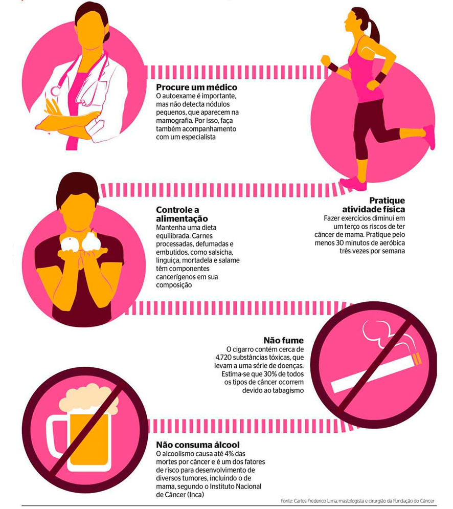

Quais os fatores de risco?

Os sinais e sintomas devem sempre ser investigados por um médico. Na rede pública de saúde, siga o passo a passo.
- Procure uma Unidade Básica de Saúde (UBS) mais próxima da sua residência, para agendar uma consulta médica para avaliação e solicitação de exames;
- O exame deverá ser agendado pelo profissional da UBS; compareça no local, dia e horário do agendamento;
- O retorno ao médico deverá ser agendado na mesma unidade onde os exames foram solicitados;
- Volte ao médico no dia, horário e local agendado para avaliação dos resultados. Ele poderá solicitar exames complementares para confirmar ou descartar o diagnóstico;
- Caso o câncer tenha sido detectado, o paciente será encaminhado para um hospital ou outro serviço de referência para o tratamento;
- O tratamento depende do tipo de tumor e fase da doença. Quanto mais cedo for diagnosticado, melhor é a resposta e a qualidade de vida do paciente.